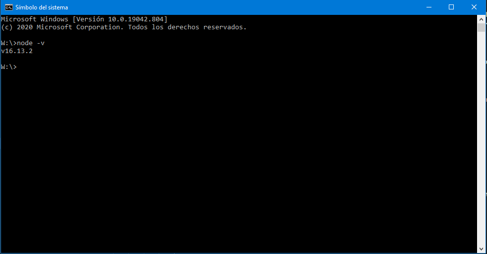
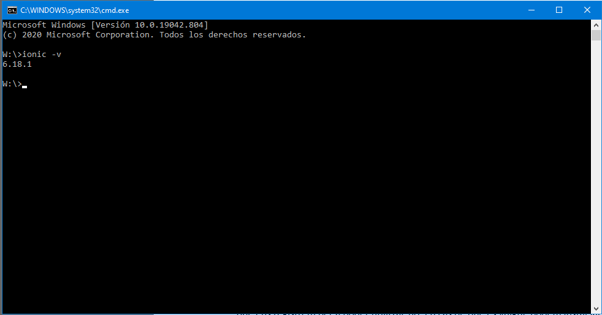

Exercici 1
El primer exercici serà la instal·lació del nostre entorn de treball per a poder crear aplicacions amb el framework Ionic . Aquest framework permet la creació d’aplicacions per a dispositius Android, iOS, Windows i navegadors al tractar-se d’uns framework multiplataforma.
Tot i que es tracta d’un framework multiplataforma pot incorporar codi nadiu dels tres sistemes operatius amb relativa facilitat per a garantir que l’aplicació es podrà executar a cada tipus de terminal.
Per a crear l'entorn idoni per a poder realitzar aplicacions al Ioni hem d'instal·lar algunes aplicacions.
NodeJS i npm
El primer que haurem de fer serà instal·lar les aplicacions NodeJS i NPM. Per fer-ho anirem a la pàgina web de NodeJS i descarreguem la opció recomanada. Un cop descarregada l’aplicació executarem l’instal·lador.
Quan tinguem l’aplicació instal·lada obrirem un terminal i escriurem el següent:
$node -v
Al fer-ho es retornarà la versió de NodeJS i ens assegurarem de que la instal·lació s’ha realitzat de forma correcta i sense cap tipus de problema.
Ionic
Per a instal·lar Ionic obrirem el terminal i introduirem la següent línia de comandament:
$npm install –g @ionic/cli
La instal·lació d’Ionic durà uns quants minuts Durant els quals se’ns anirà mostrant tots els paquets que s’estan instal·lant al nostre equip. Quan la instal·lació finalitzi escriurem el següent comandament per a veure si tot s’ha instal·lat de forma correcta al nostre equip.
$ionic –v
Se’ns retornarà la versió d’Ionic per línia de comandament. En cas contrari voldrà dir que la instal·lació no s’ha realitat de forma correcta.
Visual Code
Per a facilitar la creació del codi és recomanable instal·lar un editor de text. En aquest cas s’ha triat el IDE Visual Code al tenir inserit un terminal que permet executar ordres de comandament per a anar escalant i desenvolupant les aplicacions.
Aquest IDE es gratuït i es pot descarregar des de la seva pàgina web; tampoc cal que ens registrem per a poder utilitzar-ho. En cas de que es vulgui, podem instal·lar qualsevol altre IDE com a podria ser Atom o un editor de text. En aquest últim cas es recomana l’editor Notepad++ que també és gratuït.
Crear una carpeta
Un cop instal·lat tot l’entorn crearem una carpeta a la nostre unitat que contendrà totes les aplicacions que anem desenvolupant. Es recomana la creació d’aquesta carpeta per a tenir tots els nostres projectes localitzats. La creació de la carpeta la podem fer des de l’explorador de Windows o des de un terminal amb el següent comandament:
$mkdir nom-carpeta
Creant una aplicació
Per a crear la nostre primera aplicació obrirem un terminal i ens posiciocionarem a la carpeta que acabem de crear i on tindrem totes les aplicacions que crearem. Un cop a la carpeta escriurem:
$ionic start firstApp blank --type=angular
Aquest comandament ens crearà un esquelet buit d’una aplicació que hem anomenat firstApp. Un cop creada l’estructura de l’aplicació escriure,
$cd firstApp
Per accedir a la carpeta de l’aplicació i un cop a dins escriurem:
$code .
Aquest últim comandament ens obrirà el nostre projecta a Visual Codi. Aquesta primera aplicació es pot descarregar de forma gratuïta des del repositori de github de bcnitb.